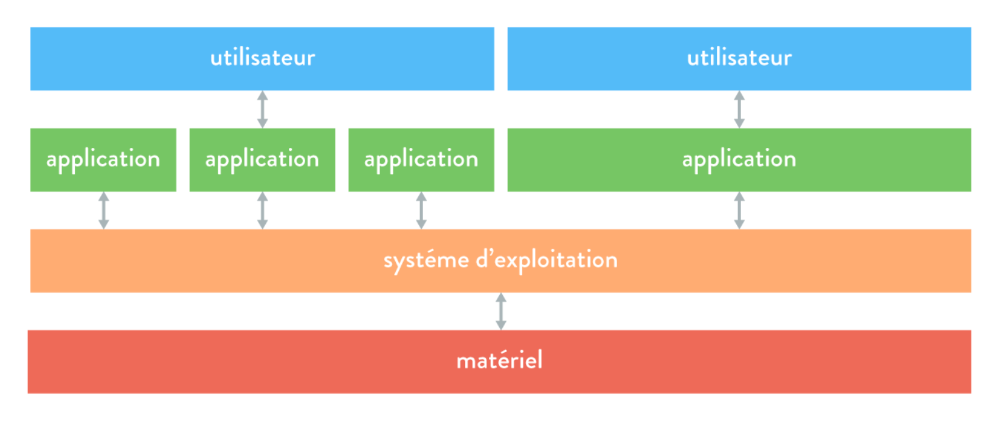
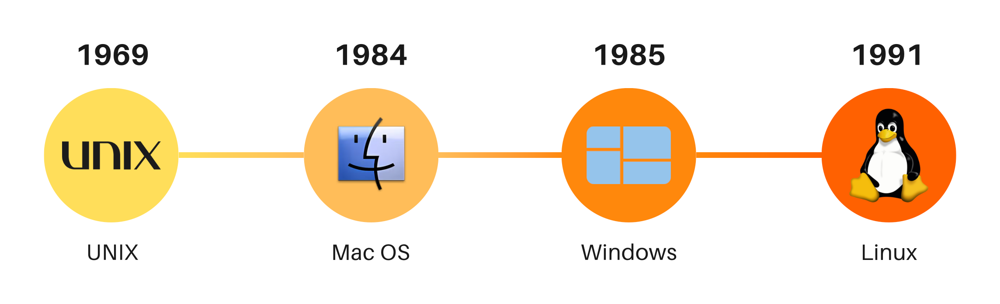

Le système d'exploitation : une interface entre l'utilisateur et la machine 💾
Lorsqu’un utilisateur souhaite exécuter une action sur un ordinateur, il ne peut pas s’adresser directement au matériel. En effet, cela impliquerait d'utiliser un langage de bas niveau, complexe et réservé aux experts en informatique 🛠️.
Pour interagir avec la machine, l’utilisateur passe donc par :
- Un logiciel 🎛️ (exemple : un navigateur web, un éditeur de texte…), ou
- Une interface de commande ⌨️ (comme un terminal permettant d'exécuter des instructions).
Dans les deux cas, ce n’est pas le matériel qui est sollicité directement, mais le système d’exploitation 🖥️, qui joue le rôle d’intermédiaire entre l’utilisateur et les composants matériels.
A retenir !
Le système d’exploitation facilite l’utilisation de l’ordinateur en permettant à l’utilisateur de lui transmettre des instructions sans avoir à manipuler directement le matériel.
1 - Un peu d’histoire 🏛️
Avant les années 50 : pas de système d’exploitation 📜
Jusqu’aux années 1950, les ordinateurs étaient réservés aux programmeurs, qui devaient interagir directement avec le matériel. Il n’existait pas de système d’exploitation, et les rôles de programmeur et d’opérateur étaient confondus.
Les années 60 : naissance des premiers systèmes d’exploitation 🚀
Avec l’arrivée des premiers systèmes d’exploitation dans les années 1960, de nouvelles fonctionnalités apparaissent :
- Ordonnancement des tâches 🗂️ pour optimiser l’utilisation des ordinateurs,
- Séparation des rôles entre programmeurs et opérateurs pour améliorer l’organisation.
Les années 70 : partage des ressources ⚡
Dans les années 1970, le développement des systèmes d’exploitation s’accélère. L’objectif principal est alors d’optimiser l’usage des calculateurs en permettant le partage des ressources matérielles entre plusieurs programmes exécutés simultanément.
Depuis les années 80 : sophistication et interconnexion 🌍
À partir des années 1980, les systèmes d’exploitation deviennent plus complexes et performants, notamment grâce à :
- L’essor de la micro-informatique 🖥️,
- Le développement des réseaux locaux et d’Internet 🌐,
- L’interconnexion entre systèmes hétérogènes.
À retenir !
Les systèmes d’exploitation ont évolué pour répondre aux besoins croissants en termes de gestion des ressources, efficacité et connectivité.
2 - Définition d’un système d’exploitation 🖥️
Un ordinateur personnel (ou Personal Computer, PC, en anglais) est capable d’exécuter plusieurs logiciels simultanément pour un utilisateur.
Un serveur, quant à lui, va encore plus loin : il peut non seulement exécuter plusieurs applications en parallèle, mais aussi gérer plusieurs utilisateurs en même temps.
Dans ces conditions, les ressources matérielles d’un ordinateur (processeur, mémoire, disque, etc.) doivent être partagées entre les différentes applications et utilisateurs qui y accèdent.
C’est le système d’exploitation qui assure cette gestion et garantit un accès équilibré aux ressources disponibles.
Définition : Système d'exploitation
Un système d’exploitation est un ensemble de programmes permettant de gérer les ressources matérielles et logicielles d’un ordinateur. Il sert d’interface entre l’utilisateur et la machine.
Windows, macOS ou encore Linux sont tous trois des systèmes d’exploitation pour ordinateur fixe et portable.
Le système d’exploitation est, en effet, un intermédiaire entre le matériel (« hardware » en anglais) et les applications (« software » en anglais) :

À retenir !
OS est l’abréviation de Operating System, traduction anglais de Système d’Opération.
Cette abréviation est couramment employée, y compris chez les francophones.
3 - Les fonctions d’un système d’exploitation ⚙️
Le système d’exploitation assure plusieurs fonctions essentielles pour garantir le bon fonctionnement d’un ordinateur.
Gestion des ressources 🔄
L’une de ses fonctions principales est de gérer l’accès aux différentes ressources matérielles :
- Processeur 🖥️ : planifie et ordonne l’exécution des tâches,
- Mémoire vive 💾 : alloue et libère l’espace nécessaire aux programmes,
- Périphériques d’entrée/sortie 🎛️ : gère l’accès aux composants comme le clavier, la souris, la carte réseau… (Nous détaillerons ces notions ultérieurement.)
Gestion des fichiers 📂
Le système d’exploitation :
- Assure le stockage des fichiers sur le disque dur,
- Organise ce stockage pour une meilleure accessibilité,
- Matérialise le concept de fichier (qui, à la base, est purement abstrait),
- Permet de manipuler les fichiers comme des objets (déplacement, suppression, modification…).
Gestion des utilisateurs et de leurs droits 👥
- Un système d’exploitation peut gérer plusieurs utilisateurs,
- Il définit et applique des droits d’accès aux fichiers et aux ressources,
- Il sécurise les accès en fonction des autorisations attribuées à chaque utilisateur.
À retenir !
Un système d’exploitation assure principalement la gestion des ressources matérielles, des fichiers et des utilisateurs afin de garantir un fonctionnement fluide et sécurisé de l’ordinateur.
4 - Les systèmes d’exploitation libres et propriétaires 💾
Les systèmes d’exploitation sont nombreux. Sur leurs ordinateurs personnels, les particuliers comme les professionnels utilisent principalement :
- Windows (développé par Microsoft),
- macOS (développé par Apple),
- Linux (moins répandu chez les particuliers mais souvent utilisé dans le monde professionnel).
Les appareils mobiles tels que tablettes et smartphones possèdent également un système d’exploitation :
- Android (développé par Google),
- iOS/iPadOS (développés par Apple).
Repères historiques
- 1969 : Première version du système d'exploitation Unix. Un grand nombre de systèmes d'exploitation utlérieurs s'en inspirent
- 1984: Première version du système d'exploitation graphique grand public Mac OS développé par Apple pour les ordinateurs personnels Macinthosh. C'est avec ce système d'exploitation qu'apparait la souris qui permet de naviguer dans l'interface autrement qu'avec des lignes de commandes.
- 1985 : Première version du système d'exploitation Windows, qui est aujourd'hui utilisé par presque 90% des ordinateurs personnels.
- 1991 : Première version du système d'exploitation Linux, qui est gratuit, open source et utilisé sur divers matériels informatiques.

Bien que tous ces systèmes d’exploitation remplissent les mêmes fonctions, certains sont libres tandis que d’autres sont propriétaires.
Définition : Logiciel libre
Un logiciel libre (open source en anglais) est un logiciel dont le code source est accessible et modifiable.
Il peut être consulté, modifié et redistribué sans restriction financière.
Exemples :
- Linux est un système libre, offrant plusieurs variantes comme Debian ou Ubuntu.
- Android est partiellement libre, car même s'il repose sur un noyaux Linux, certaines parties du système sont propriétaires.
- En opposition, Windows, macOS et iOS sont des logiciels propriétaires : leur code source est fermé et ils sont soumis à des licences restreintes.
À retenir !
Linux est un système d’exploitation libre, contrairement à Windows et macOS, qui sont des systèmes propriétaires.
Astuce 💡
Lors de l’achat d’un ordinateur neuf, un système d’exploitation préinstallé (Windows ou macOS) est souvent inclus dans le prix.
💰 Il est possible d’acheter un ordinateur sans OS et d’y installer Linux gratuitement !
Infos
Il existe une mutitude de système d'exploitation pour une multitude d'objets ! On pensera, par exemple, a :
- Téléviseurs connectés : webOS (par LG), Androïd TV (par Google), tvOS (par Apple), ...
- Montres connectées : watchOS (par Apple), Wear OS (par Google), ...
- Frigos connectées : Family Hub (par Samsung), Hitachi Fridgee (par Hitachi), ...